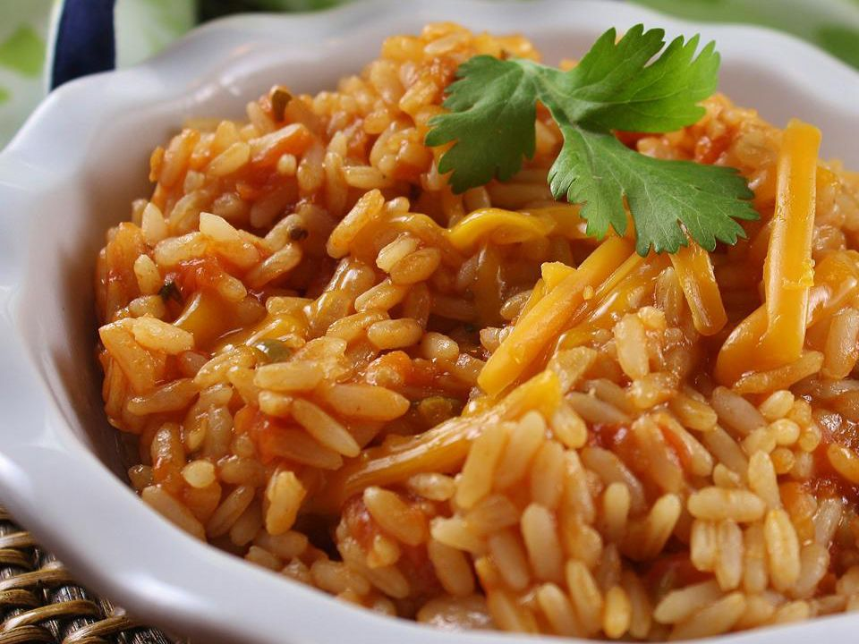

Red Rice

This Mexican red rice is easy to make and authentic in taste! Use a different chile if you want milder or hotter rice.
Ingredients
- 2 Roma (plum tomatoes), cored
- 2 tablespoons vegetable oil
- 1 cup minced onion
- 2 cloves garlic, minced
- 1 cup uncooked long-grain white rice
- 1 ¾ cups low-sodium chicken broth
- ¼ cup canned tomato sauce
- 1 jalapeno pepper, chopped
- 2 sprigs fresh cilantro
- salt to taste
Steps
- Grate tomatoes into a bowl using a box grater; discard tomato skins.
- Heat vegetable oil in a heavy skillet over medium-high heat.
- Add onion; cook and stir until tender, about 5 minutes.
- Stir in garlic and cook until fragrant, about 1 minute.
- Stir in rice and cook, stirring often, until rice is lightly toasted, about 3 more minutes.
- Stir in grated tomato, chicken broth, and tomato sauce; bring mixture to a boil.
- Stir in jalapeño pepper, cilantro, and salt; reduce heat to low.
- Cover the skillet and simmer until liquid has been absorbed, about 15 minutes. Do not lift the cover while rice is cooking.
- Turn off the heat; let rice stand, covered, for 8 minutes.
- Fluff with a fork before transferring rice to a serving dish.
- Enjoy!